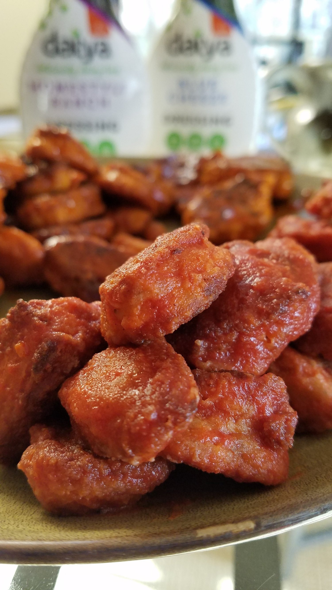
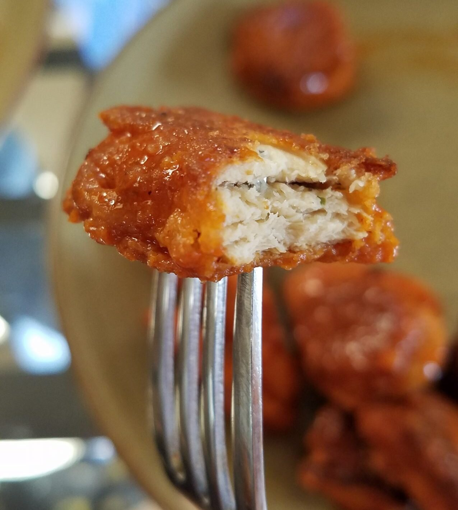
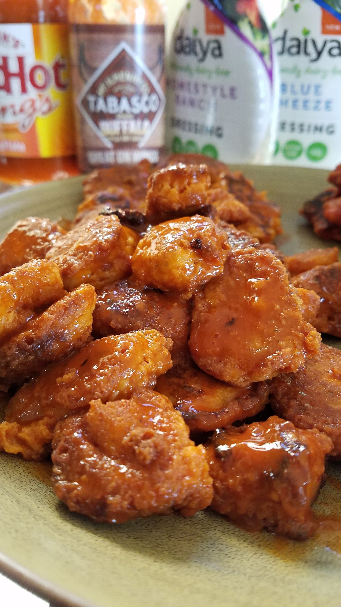

Vegan Buffalo Chicken Bites



Ooh baby ohh mannnn. Vegan buffalo chicken bites are one of the few things I never expected to enjoy so thoroughly in my lifetime. But! This recipe is so satisfying; it's true comfort food at its finest. To make it even more outstanding, it was so absolutely simple to make! At the essence of it, it reeeally only requires 5 ingredients.
Honestly? I don't even remember how this evil genius idea come to fruition. I just know that all of a sudden it was a plan for me and Nick to execute, and execute it we did! After the first bite, I just sat in disbelief. I mean, I assumed it would taste pretty good? But because of the simplicity of the recipe, I wasn't sure exactly how much of a wow-factor it would have. Buuuutt...wow.
I knew immediately that I wanted to share this recipe with the world. Although it's not the "healthiest" recipe in the world, it's fun. It's vegan. Why not. The superbowl is just around the corner, and there couldn't be a more opportune time than now to make this for a crowd!
You can really vary this to your liking. For exampleeee.. we tried out 1) the frank's buffalo sauce (my favorite) and the 2) tabasco buffalo sauce. I preferred the Frank's but I think Nick liked the fiery flavor of Tabasco better. We also tried 1) vegan ranch (my favorite) and 2) vegan blue cheese (nick's favorite). Both were great, so go with whatever you prefer! Or both. Because yum. Lastly, you can use whatever high-heating oil you prefer. We used canola oil, but I know many would prefer something like grapeseed oil or safflower oil. Your call!
As a meal, Nick and I managed to completely hammer this down together; however, I admit that we were both very stuffed. That is why I suggest this serves 2-3 as a stand alone meal, but it would definitely serve more as a snack or party appetizer.
Vegan Buffalo Chicken Bites
Serves: 4-5 (for snacking), 2-3 (as a meal)
Buffalo Bites
-
1 bag Beyond Meat chicken strips, thawed
-
1 cup unbleached all-purpose flour
-
2 TBSP nutritional yeast (Optional)
-
1/2 tsp smoked paprika
-
sea salt and pepper, to taste
-
~1/2 cup water
-
grapeseed or canola oil, for cooking
-
Frank's RedHot Buffalo Wings Sauce (or other vegan buffalo sauce)
For Dipping
-
Daiya Homestyle Ranch Dairy-Free Dressing
-
Daiya Blue Cheeze Dairy-Free Dressing
In a medium sized bowl, combine the flour, nutritional yeast, paprika, salt, and pepper. Slowly add the water, whisking until a thick batter is formed. You may need more or less liquid, so just mix slowly until desired consistency is reached. Prepare the "chicken" by cutting the Beyond Meat strips into bite-sized pieces.
In a skillet, begin to heat 2-3 TBSP of oil for pan frying the bites. You want just a thin layer of oil, ~1 cm in depth, not too much. Once heated, coat your chopped Beyond Meat strips in the flour batter, placing them one-by-one in the oil.
Cook each side for 3-4 minutes, until the batter bubbles and the bottoms turn a crispy brown. With this, it will be better to over-crisp the exterior rather than undercook. Once browned, flip and fry the other side another 1-2 minutes, until crisp. Remove from pan and set on a paper towel to cool. Repeat until all of the battered bites are cooked.
In a large bowl, combine the cooked chicken bites with approximately 1/2 cup Frank's RedHot Buffalo Wings Sauce (or your favorite vegan buffalo sauce). Toss to combine and fully coat with the buffalo sauce, adding more sauce if needed. Once coated, remove the bites from the bowl and transfer to a serving tray.
Serve with Daiya Dairy-Free Ranch and/or Blue Cheeze.